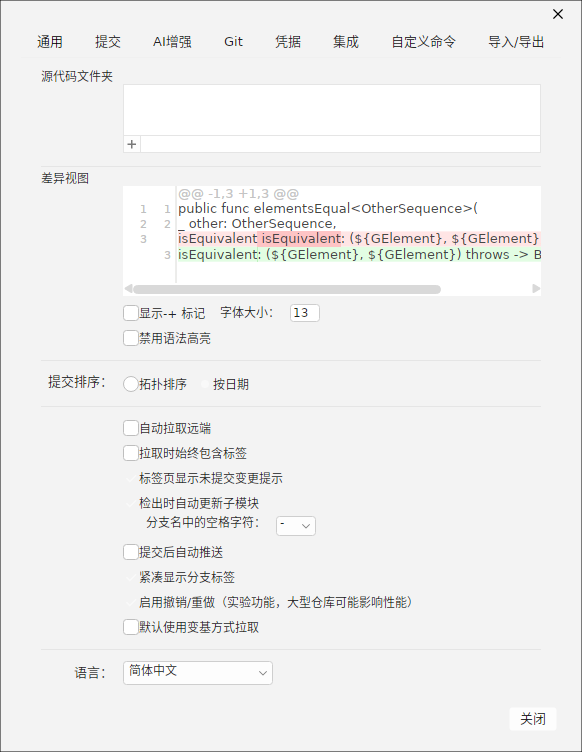
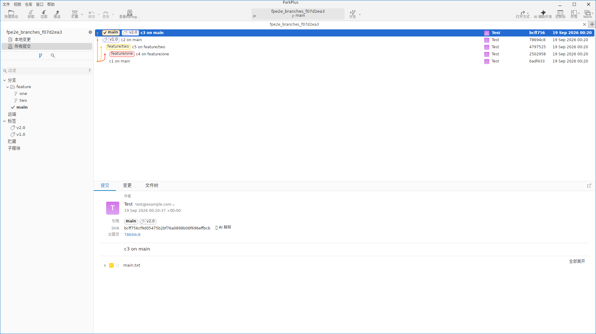
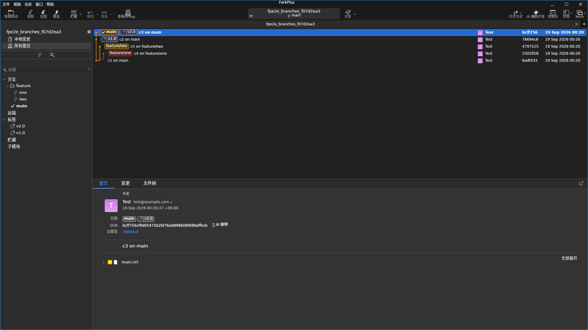
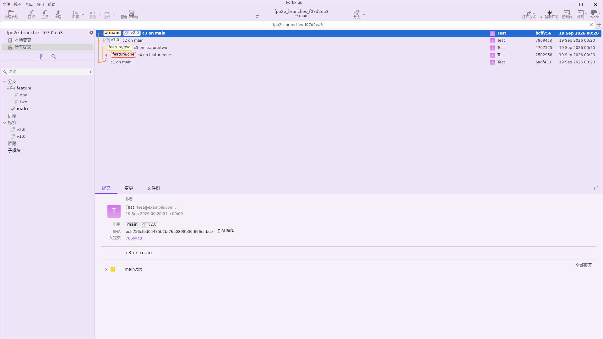

「偏好设置」集中管理 ForkPlus 的全局配置，通过「偏好设置」菜单打开。窗口顶部以多个标签页组织设置项，改动即时生效。本手册重点介绍其中的切换界面语言与切换主题。
设置标签页
偏好设置窗口包含多个标签页，可按功能域快速定位：
- 通用（General）：界面语言、差异视图外观、提交排序、Git 行为（自动拉取、提交后推送等）。
- 提交（Commit）：提交相关默认行为。
- Git：Git 核心参数与行为。
- 集成（Integration）：与外部工具/服务的集成。
- 自定义命令（Custom Commands）：管理自定义的 Git 命令菜单。
- AI 增强（AI）：AI 提交/审查/开发助手服务配置。
- 导入/导出（Import/Export）：设置与快捷键的导入导出。

切换界面语言
ForkPlus 内置 8 种界面语言，在「通用」页底部的「语言」下拉框中即点即切：
| 语言 | 代码 | 显示名 |
|---|---|---|
| 简体中文 | zh-Hans | 简体中文 |
| 繁體中文 | zh-Hant | 繁體中文 |
| 英文 | en | English |
| 日文 | ja-JP | 日本語 |
| 韩文 | ko-KR | 한국어 |
| 法文 | fr-FR | Français |
| 德文 | de-DE | Deutsch |
| 西班牙文 | es-ES | Español |
选择目标语言后，ForkPlus 会立即重本地化全部界面文本——包括菜单、标签页标题、按钮、提示等，无需重启应用。语言设置持久化保存，下次启动沿用。
小贴士：语言切换后如果某些第三方/自定义语言包缺失翻译，ForkPlus 会回退到英文显示，不影响功能使用。
切换主题
ForkPlus 支持多种主题（明/暗 × 强调色）。可通过菜单「切换主题」打开主题二级菜单（内含 Solid Colors 三级菜单）快速切换。切换后整屏配色立即更新。
下面以同一仓库窗口在三种主题下的表现说明切换效果：
浅色主题（Light）

深色主题（Dark）

强调色主题（Solid）

小贴士：主题选择会持久化，并在新开窗口/标签页中保持一致。若希望跟随系统外观，可在主题菜单中选用「随系统」的选项。
其他通用设置示例
- 差异视图字体大小：调整 Diff 编辑器字号，并可关闭语法高亮。
- 提交排序：提交图按「拓扑排序」或「按日期」展示。
- 自动拉取远端：打开标签页时自动 fetch；可配套「拉取时包含标签」。
- 提交后自动推送：提交完成立即推送到远端。